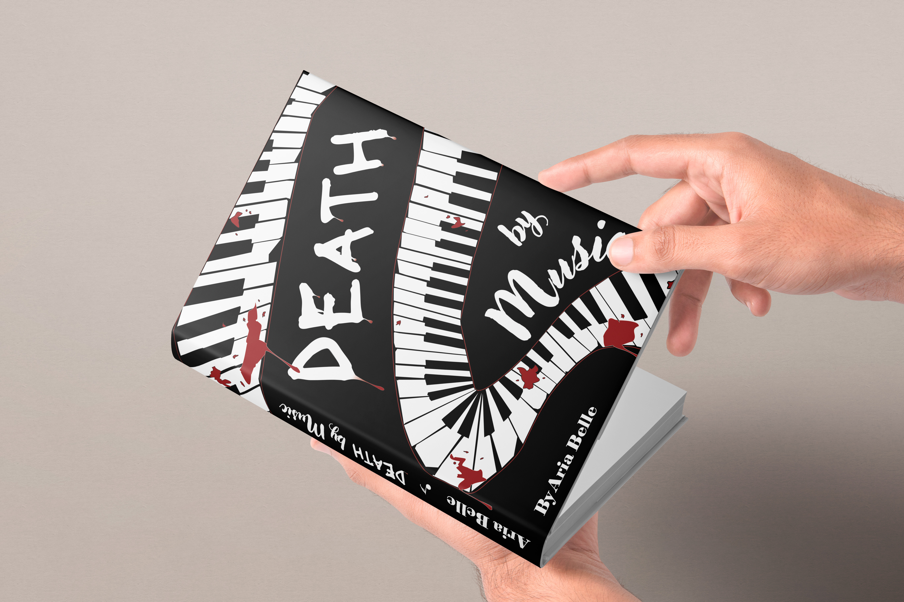
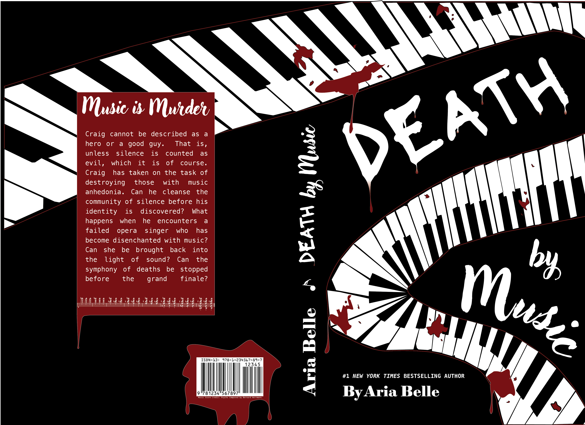
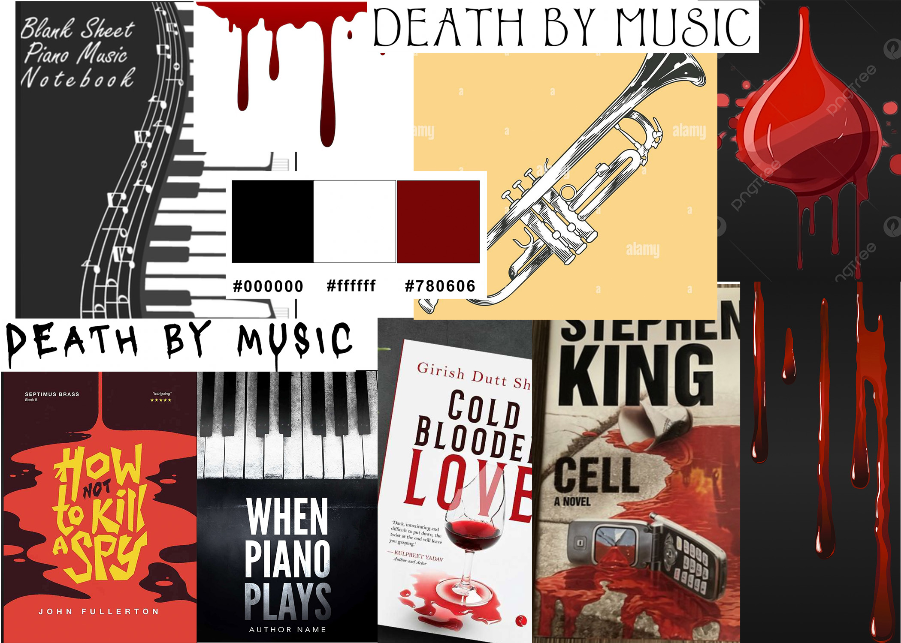
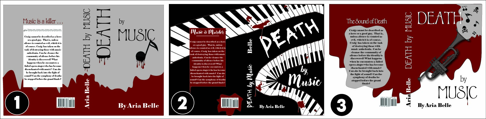

SOFTWARE
Adobe Illustrator
Adobe Photoshop
ROLE
Independent Editorial Designer
Book Cover Designer
DELIVERABLES
Concept Development
Title Development
Cover Design
Spine & Back Cover Design
Publication Layout
TOOLS & CREDITS
Envato Elements (licensed subscription assets & mockups)
THE CONCEPT
Death By Music is a conceptual thriller cover designed for fictional author Aria Belle. The story follows a musician whose obsession with controlling the music world turns violent.
The challenge was to communicate psychological tension while balancing musical elegance with the darker atmosphere of a thriller.

Complete cover design — front, spine, and back.
CREATIVE DIRECTION
The visual direction combines dramatic typography, piano-key imagery, and blood-red accents to create a sophisticated but unsettling mood.
Customized display lettering establishes the thriller's intensity, while elegant script and supporting typography introduce contrast. The piano keys connect the front, spine, and back, unifying the design through a recognizable musical motif.

Visual direction — typography, palette, and atmosphere.
DESIGN DEVELOPMENT
I explored existing thriller covers and developed an antagonist-driven story concept, then created the fictional author identity, title, and back-cover copy to support the narrative.
After sketching several directions, I refined the selected concept through typography and composition adjustments, customizing the dripping display lettering and integrating a subtle musical reference to reinforce the suspense.

Initial sketches — exploring composition and visual direction.

Three cover directions presented for selection.
FINAL DESIGN
The final design brings the title, typography, and piano-key motif together in a cohesive publication, carrying the same visual tension from the front cover through the spine and back.
Final publication — full-cover softcover mockup.
Great idea for a book? Let's create the cover it deserves.
CONTACT ME